Тренерский состав
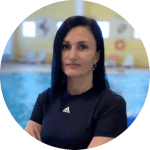
Сафарова Фаниля Райхановна
Тренер, кандидат в мастера спорта по плаванию
Выпускница Челябинского государственного университета (факультет физической культуры и спорта, педагогическое образование). Два раза повышала свою квалификацию: в Сургутском государственном педагогическом университете и в Сибирском государственном университете физической культуры и спорта. Была одним из членов сборной команды по плаванию Башкирской АССР. Является победителем и призёром молодёжных первенств и чемпионатов. В Swim Time занимается с детьми от 3 до 5 лет (группа 0) и от 6 до 9 лет (группа 1). Общий стаж работы – 20 лет.
Выпускница Челябинского государственного университета (факультет физической культуры и спорта, педагогическое образование). Два раза повышала свою квалификацию: в Сургутском государственном педагогическом университете и в Сибирском государственном университете физической культуры и спорта. Была одним из членов сборной команды по плаванию Башкирской АССР. Является победителем и призёром молодёжных первенств и чемпионатов. В Swim Time занимается с детьми от 3 до 5 лет (группа 0) и от 6 до 9 лет (группа 1). Общий стаж работы – 20 лет.
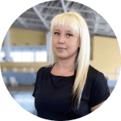
Салмина Дарья Булатовна
Тренер, кандидат в мастера спорта по плаванию
Обучалась в Сургутском государственном университете на факультете физической культуры и спорта. Была одним из членов сборной команды ХМАО-Югры по плаванию. Неоднократно принимала участие в соревнованиях по водному поло, плаванию и становилась не только призёром, но и победителем городских, окружных и зональных первенств. Является действующим спортсменом в категории «Мастерс».Проходила повышение по направлению «Организация работы инструктора по плаванию для детей раннего и дошкольного возраста» В Академии спорта и фитнеса занимается с детьми от 3 до 5 лет (группа 0) и от 6 до 9 лет (группа 1). Общий стаж работы – 6 лет.
Обучалась в Сургутском государственном университете на факультете физической культуры и спорта. Была одним из членов сборной команды ХМАО-Югры по плаванию. Неоднократно принимала участие в соревнованиях по водному поло, плаванию и становилась не только призёром, но и победителем городских, окружных и зональных первенств. Является действующим спортсменом в категории «Мастерс».Проходила повышение по направлению «Организация работы инструктора по плаванию для детей раннего и дошкольного возраста» В Академии спорта и фитнеса занимается с детьми от 3 до 5 лет (группа 0) и от 6 до 9 лет (группа 1). Общий стаж работы – 6 лет.
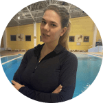
Инаке Элла Кирилловна
Тренер, мастер спорта России по плаванию
Обучалась в Сургутском государственном университете на факультете физической культуры и спорта (направление – спортивная тренировка). В 2021 году окончила магистратуру с красным дипломом в Российском государственном университете физической культуры, спорта, молодежи и туризма (направление – спорт, профиль – спорт высших достижений и система подготовки спортсмена). Была членом юношеской сборной России по плаванию на открытой воде. Является победителем Всероссийских соревнований по плаванию, а таже победителем городских, окружных и зональных первенств. В Swim Time тренирует детей от 6 до 9 лет (группа 1). Общий стаж работы – 6 лет.
Обучалась в Сургутском государственном университете на факультете физической культуры и спорта (направление – спортивная тренировка). В 2021 году окончила магистратуру с красным дипломом в Российском государственном университете физической культуры, спорта, молодежи и туризма (направление – спорт, профиль – спорт высших достижений и система подготовки спортсмена). Была членом юношеской сборной России по плаванию на открытой воде. Является победителем Всероссийских соревнований по плаванию, а таже победителем городских, окружных и зональных первенств. В Swim Time тренирует детей от 6 до 9 лет (группа 1). Общий стаж работы – 6 лет.
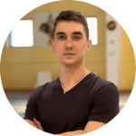
Карпович Артём Вячеславович
Тренер, кандидат в мастера спорта по плаванию.
Является призёром Всероссийских соревнований по многоборью (в дисциплине плавание), а также призёром чемпионата России по парашютному спорту. Проходил повышение по направлению «Организация работы инструктора по плаванию для детей раннего и дошкольного возраста» В Swim Time тренирует детей от 3 до 5 лет (группа 0) и от 6 до 9 лет (группа 1). Общий стаж работы – 5 лет.
Является призёром Всероссийских соревнований по многоборью (в дисциплине плавание), а также призёром чемпионата России по парашютному спорту. Проходил повышение по направлению «Организация работы инструктора по плаванию для детей раннего и дошкольного возраста» В Swim Time тренирует детей от 3 до 5 лет (группа 0) и от 6 до 9 лет (группа 1). Общий стаж работы – 5 лет.
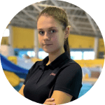
Янцур Мария Ивановна
Тренер, кандидат в мастера спорта по плаванию.
Является призёром этапа кубка России, европейских игр, а также чемпионкой ХМАО-Югры по плаванию. Проходила повышение по направлению «Организация работы инструктора по плаванию для детей раннего и дошкольного возраста» В Swim Time проводит обучение плаванию детей от 3 до 5 лет (группа 0). Общий стаж работы – 5 лет.
Является призёром этапа кубка России, европейских игр, а также чемпионкой ХМАО-Югры по плаванию. Проходила повышение по направлению «Организация работы инструктора по плаванию для детей раннего и дошкольного возраста» В Swim Time проводит обучение плаванию детей от 3 до 5 лет (группа 0). Общий стаж работы – 5 лет.
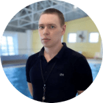
Ренёв Александр Михайлович
Тренер, кандидат в мастера спорта по плаванию
Проходил обучение в Сургутском государственном университете на факультете физической культуры. Неоднократно становился победителем городских, региональных и окружных соревнований по плаванию и призёром первенства ХМАО. В Академии спорта и фитнеса занимается с детьми от 6 до 9 лет (группа 1) и от 10 до 15 (группа 2). Общий стаж работы – 12 лет.
Проходил обучение в Сургутском государственном университете на факультете физической культуры. Неоднократно становился победителем городских, региональных и окружных соревнований по плаванию и призёром первенства ХМАО. В Академии спорта и фитнеса занимается с детьми от 6 до 9 лет (группа 1) и от 10 до 15 (группа 2). Общий стаж работы – 12 лет.
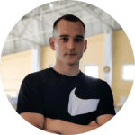
Ненов Игорь Игоревич
Тренер детей с ограниченными возможностями здоровья (ОВЗ)
I взрослый разряд по спортивному плаванию Обучался в Сургутском государственном университете по направлению адаптивная физическая культура. Помимо этого, получил образование по направлению гидрореабилитация в Санкт-Петербургском Национальном государственном университете физической культуры, спорта и здоровья им. П.Ф.Лесгафта. Курсы по повышению квалификации (теория и методика гидрореабилитации) проходил в Московском национальном центре института развития дополнительного образования в 2022 году. Победитель и призер окружных и городских соревнований Общий стаж работы – 5 лет.
I взрослый разряд по спортивному плаванию Обучался в Сургутском государственном университете по направлению адаптивная физическая культура. Помимо этого, получил образование по направлению гидрореабилитация в Санкт-Петербургском Национальном государственном университете физической культуры, спорта и здоровья им. П.Ф.Лесгафта. Курсы по повышению квалификации (теория и методика гидрореабилитации) проходил в Московском национальном центре института развития дополнительного образования в 2022 году. Победитель и призер окружных и городских соревнований Общий стаж работы – 5 лет.
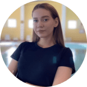
Трофимова Анна Сергеевна
Тренер, инструктор по грудничковому плаванию
I взрослый разряд по спортивному плаванию Является студенткой факультета физической культуры и спорта в Сургутском государственном педагогическом университете. Неоднократно становилась призёром югорского марафона по плаванию (дистанции 3.5 и 7.5 километров), а также Универсиады по плаванию среди студентов ХМАО. В Академии спорта и фитнеса Swim Time занимается с детьми от 3 до 5 лет (группа 0). Общий стаж работы – 3 года.
I взрослый разряд по спортивному плаванию Является студенткой факультета физической культуры и спорта в Сургутском государственном педагогическом университете. Неоднократно становилась призёром югорского марафона по плаванию (дистанции 3.5 и 7.5 километров), а также Универсиады по плаванию среди студентов ХМАО. В Академии спорта и фитнеса Swim Time занимается с детьми от 3 до 5 лет (группа 0). Общий стаж работы – 3 года.
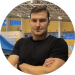
Полуянович Антон Владимирович
Тренер, мастера спорта по плаванию
Выпускник школы олимпийского резерва «Нефтяник». Помимо этого, обучался в Сургутском государственном университете на факультете рекреации и оздоровительного туризма. Призёр не только окружных соревнований по плаванию, но и чемпионатов России (плавание брасом на дистанциях 50 и 100 метров). Является действующим спортсменом в категории «Мастерс». В Академии спорта и фитнеса тренирует 2 группы детей: 6-9 лет (группа 1) и 10-15 лет (группа 2). Общий стаж работы – 10 лет.
Выпускник школы олимпийского резерва «Нефтяник». Помимо этого, обучался в Сургутском государственном университете на факультете рекреации и оздоровительного туризма. Призёр не только окружных соревнований по плаванию, но и чемпионатов России (плавание брасом на дистанциях 50 и 100 метров). Является действующим спортсменом в категории «Мастерс». В Академии спорта и фитнеса тренирует 2 группы детей: 6-9 лет (группа 1) и 10-15 лет (группа 2). Общий стаж работы – 10 лет.
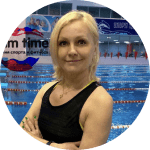
Растегаева Наталья Юрьевна
Тренер по аквааэробике и аквафитнесу, кандидат в мастера спорта по легкой атлетике
Победитель и призёр молодежных чемпионатов по легкой атлетике.Обучалась у международных призентеров - World Class (г.Москва) и Планета Фитнес (г. Санкт-Петербург) Стаж работы - более 20 лет В академии спорта и фитнеса проводит тренировки по аквааэробике и аквафитнесу
Победитель и призёр молодежных чемпионатов по легкой атлетике.Обучалась у международных призентеров - World Class (г.Москва) и Планета Фитнес (г. Санкт-Петербург) Стаж работы - более 20 лет В академии спорта и фитнеса проводит тренировки по аквааэробике и аквафитнесу
Методика обучения
В каждой возрастной группе, на разных этапах
подготовки в нашем клубе применяются: словесные,
наглядные и практические методы обучения, подбирая
в каждом конкретном случае различные сочетания и
соотношения, для эффективности спортивно-оздоровительного занятия.
- Словесный, теоретический метод.
Тренер беседует со своими подопечными объясняя и описывая каждый стиль или упражнение, создавая предварительное представление об изучаемом движении. Производит анализ указанных команд. При работе с детьми указания даются в форме образных выражений и сравнений, (например, «Работай руками как мельница, задуй горящую свечу и т.д.)
Тренер беседует со своими подопечными объясняя и описывая каждый стиль или упражнение, создавая предварительное представление об изучаемом движении. Производит анализ указанных команд. При работе с детьми указания даются в форме образных выражений и сравнений, (например, «Работай руками как мельница, задуй горящую свечу и т.д.)
- Наглядный метод.
Наша команда – это бывшие и действующие профессиональные спортсмены в области плавания, окончившие школы олимпийского резерва. Они как никто другой умеют непосредственно в воде, показать материал на практике. Рассказать про самые распространенные ошибки и научить плавать правильно. В клубе действует фото и видео фиксация тренировочного занятия, что является одним из плюсов для корректировки движений в воде.
Наша команда – это бывшие и действующие профессиональные спортсмены в области плавания, окончившие школы олимпийского резерва. Они как никто другой умеют непосредственно в воде, показать материал на практике. Рассказать про самые распространенные ошибки и научить плавать правильно. В клубе действует фото и видео фиксация тренировочного занятия, что является одним из плюсов для корректировки движений в воде.
- Практический метод.
В данной подгруппе используются соревновательные, игровые и практические методы упражнений. Разнообразные подводящие упражнения, имитация движений на суше, дальнейшая последовательная демонстрация их в воде. Поощрение за выполнение заданий, делает занятия плаванием и процесс обучения в целом более интересным. Для детей дошкольного и школьного возраста на занятиях плаванием игра является формой индивидуального самовыражения, эмоциональной зарядкой ее мы используем как отдельный вид тренировочного занятия, так и в комплексе например – эстафетное плавание.
В данной подгруппе используются соревновательные, игровые и практические методы упражнений. Разнообразные подводящие упражнения, имитация движений на суше, дальнейшая последовательная демонстрация их в воде. Поощрение за выполнение заданий, делает занятия плаванием и процесс обучения в целом более интересным. Для детей дошкольного и школьного возраста на занятиях плаванием игра является формой индивидуального самовыражения, эмоциональной зарядкой ее мы используем как отдельный вид тренировочного занятия, так и в комплексе например – эстафетное плавание.
В клубе плавания (г.Сургут) имеется 3 группы,
в которых занимаются дети разных возрастов.
Группа 0 (от 3 до 5 лет)
Групповые занятия плаванием проводятся в бассейне, глубина которого составляет 0,6 м.
В качестве дополнительного инвентаря на занятиях наши специалисты используют нудлс, досточку, а также игрушки, которые применяются для обучению заныривания, развития дыхания (мячики).
Удерживающие пояса не применяются (в целях эффективного и достаточно быстрого обучения самостоятельному плаванию).
*после освоения первостепенных навыков, осуществляется перевод на новый этап обучения, в оздоровительный бассейн глубиной 1 метр 30 см.
Группа 1 (от 6 до 9 лет)
Групповые занятия для детей данного возраста проходят в оздоровительном бассейне, глубиной 1 метр 30 см.
Для эффективного обучения детей данного возраста в тренировочном процессе используются досточки, калабашки, лопатки и ласты.
*после освоения различных стилей плавания, при демонстрации хороших результатов на курсовке, осуществляется перевод на новый этап обучения - спортивный бассейн, длина дорожки -25 метров.
Группа 2 (от 10 до 15 лет)
Обучение плаванию с нуля детей старшего возраста строится преимущественно на выработке выносливости каждого пловца, оттработке страхов, оттачивании скорости, а также проходит подробное изучение каждых из стилей плавания.
Специалисты академии в обучении старших групп используют калабашки, досточки, лопатки, ласты, утяжелители. Данный инвентарь применяется нестандартно, согласно авторской методике академии плавания, что позволяет за короткое время добиться значительных результатов.
Этапы тренировок детей всех вышеперечисленных групп идентичны.
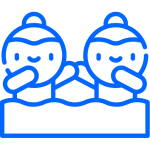
Разминка
Каждое занятие начинается с разминки
(разогрев мышц перед плаванием, повышение
эластичности связок и гибкости суставов).
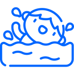
Основная часть
Каждое занятие начинается с разминки
(разогрев мышц перед плаванием, повышение
эластичности связок и гибкости суставов).
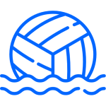
Игровая часть
Каждое занятие начинается с разминки
(разогрев мышц перед плаванием, повышение
эластичности связок и гибкости суставов).
Заминка
Каждое занятие начинается с разминки
(разогрев мышц перед плаванием, повышение
эластичности связок и гибкости суставов).
Запишись на пробное занятие